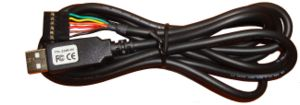
For downloading software into the Skycube board or controlling modular robots from the PC, the TTL-232R-5V FTDI cable is used. This cable is connect on one side to the USB port in the PC and on the other side to the Skycube board, by means of a three-pins header. Originally, this cable comes give a six-pin female straight header. It has to be changed by a three-pin header for connecting to the Skycube board. This process is reversible, so that the original cable can be recovered anytime.
| 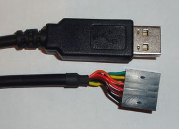 Original FTDI cable. 6-pin female header] (Click to enlarge) |
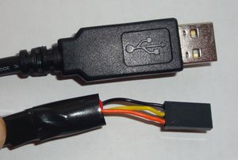 Modified FTDI cable for download software into the Skycube board with a 3-pin header (Click to enlarge) |
The 6 wires should be pull out one. Using a flathead screwdriver lift the tap and pull out the wire.
| 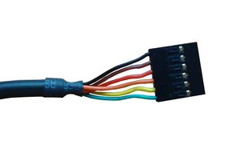 1) Original cable with the 6 pin header (click to enlarge) |
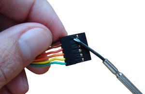 2) Lift the tap for pull out the wire (click to enlarge) |
| 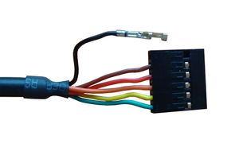 3) The black wire is being pulled out from the header (click to enlarge) |
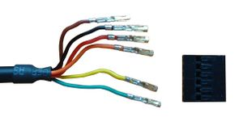 4) All the wires have been extracted (click to enlarge) |
Insert the black, yellow and orange wires in the new header. It is very important to connect them exactly in the same way than in the figures. Make sure the header is in the right position, with the tabs facing up (See the pictures).
| 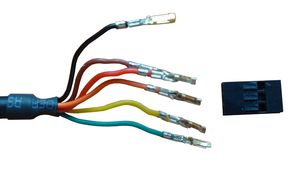 1) The cable with extracted wires along with the 3-pin header (click to enlarge) |
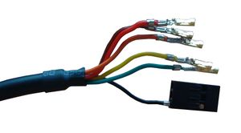 2) Black wire inserted (click to enlarge) |
| 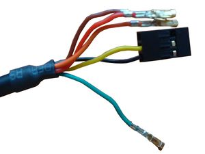 3) Yellow wire inserted (click to enlarge) |
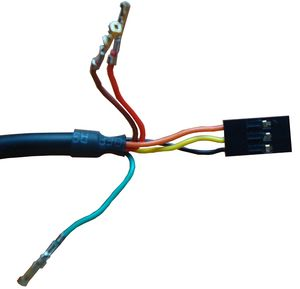 4) Orange wire inserted (click to enlarge) |
Put insulating tape around the metal pins of the remaining wires to avoid short circuits. Then, bend back the wires until they are paralell to the cable. Put insulating tape around them. The download cable is ready to use!!!
| 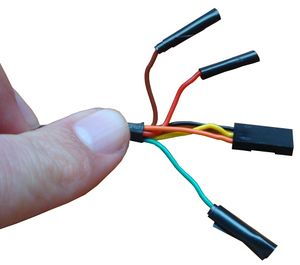 1) Put insulating tape arount the three remaining wires (Click to enlarge) |
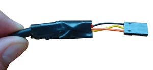 2) The cable is ready to be used with the Skycubre board (Click to enlarge) |
It is important to put a label in the cable to identify the correct orientation for the connection to the Skycube board. This will avoid mistakes.
| 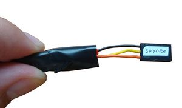 1) The cable with a label for connecting it in the right orientation (Click to enlarge) |
The three-pin female header is attached to the M6 connector of the Skycube board in the same orientation shown in the figures. To avoid connecting the header in the wrong orientation, it is useful to put a label as shown in the right figure.
| 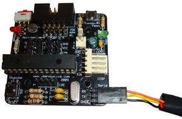 Connection of the modified FTDI cable to the skycube board (Click to enlarge) |
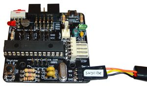 Connection of the modified FTDI cable with a label in the header that shows the right orientation (Click to enlarge) |
| Photo album |